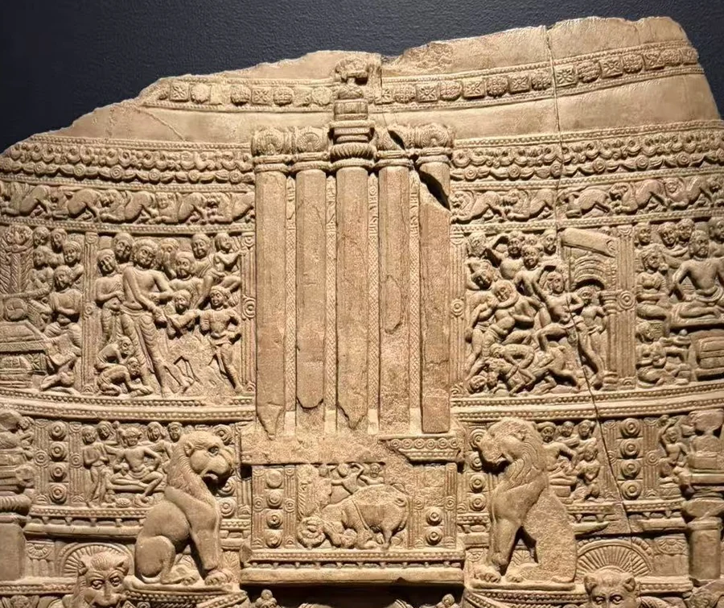
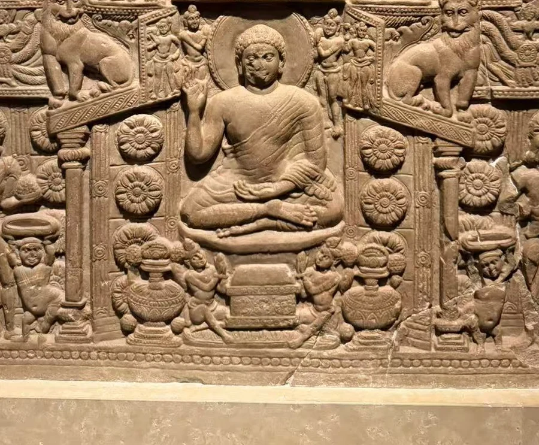
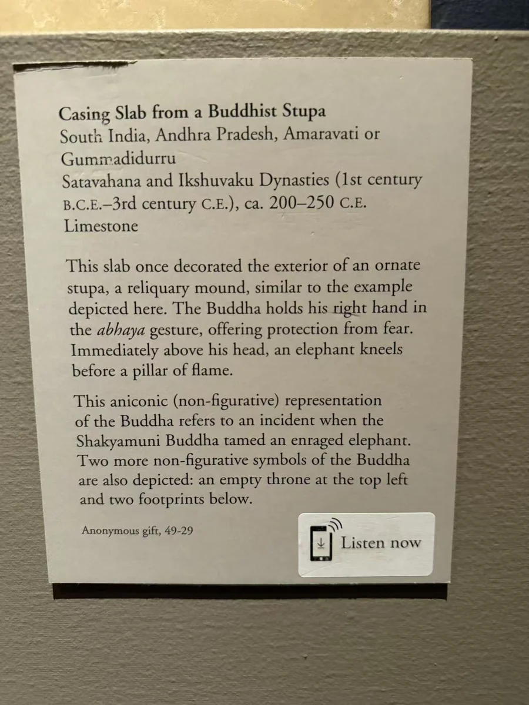
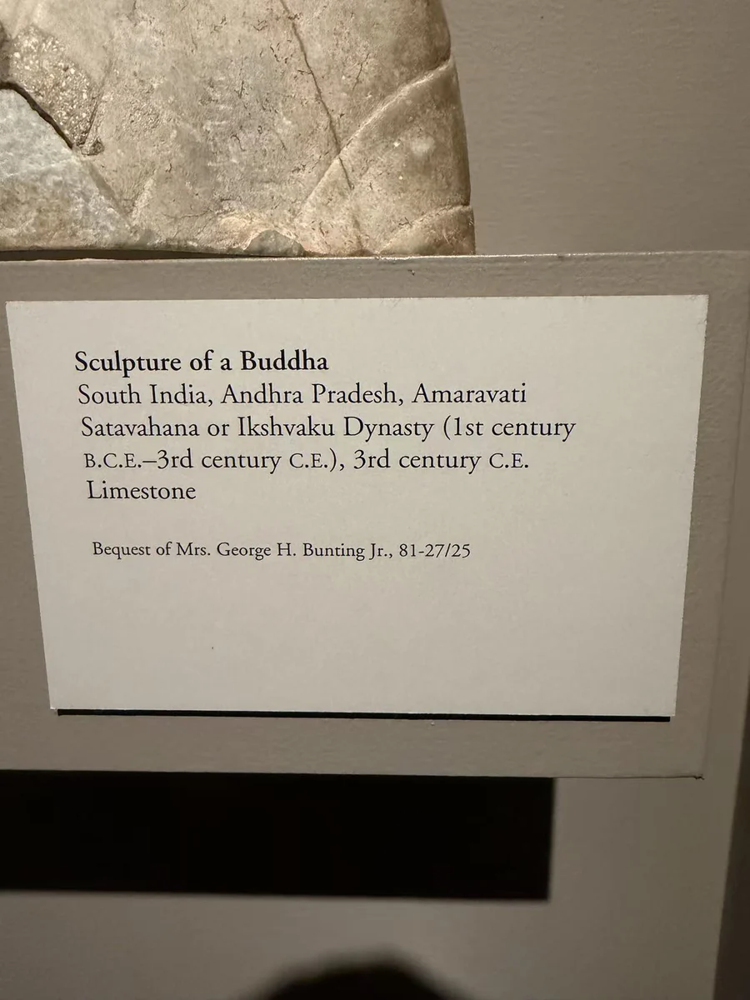

03 / 佛塔周围
一座佛塔，几种佛陀的在场
一块石板上，建筑、人形与圣迹同时出现。

图片各自缩放，非实物等比例；尺寸见作品资料。
这块石板像在佛塔表面再刻出一座佛塔。先看外轮廓：弧形上缘之下，层层横带、栏楯和竖直构件把石面分成许多小空间。再看下方中央，坐佛在两侧人物之间举手，层叠的座台托住身体。把照片放大，人物、动物与花饰并不是均匀铺满的纹样；它们围绕建筑的中心与层次各占一个位置。
纳尔逊的解释指出，同一画面里可以读到人形佛、空座、足印与火柱等不同表达。它们的并存，给“先有象征，后来才有人形”的直线叙述添了一道重要的停顿。这里更像是一种丰富的视觉语言：建筑、圣迹与人物共同提示佛陀的在场，观看者可以从不同细节进入礼拜的意义。 [1]
馆方来源记录将49-29联系到 Gummadidurru 主佛塔的发掘。旁边的阿马拉瓦蒂佛半身像提供的是区域比较：同样的石灰岩，在独立身体上呈现出更连贯的胸肩与面容。石板中的小像让人沿着场景来回读，半身像则让目光停在眉眼和衣缘。两处遗址的雕刻，由此呈现了同一地区不同尺度的佛陀形象。
近看石面




相互参看

本篇作品
佛塔外饰石板 · 49-29
- 原题名
- Casing Slab from a Buddhist Stupa
- 年代
- 约200—250年
- 材料
- 石灰岩
- 尺寸
- 82.55 × 66.68厘米
- 编号
- 49-29
- 收藏／展出
- 纳尔逊—阿特金斯艺术博物馆
- 地域关系
- 有发掘记录：Gummadidurru
佛半身像 · 81-27/25
- 原题名
- Bust of Buddha
- 年代
- 3世纪
- 材料
- 石灰岩
- 编号
- 81-27/25
- 收藏／展出
- 纳尔逊—阿特金斯艺术博物馆
- 地域关系
- 归属阿马拉瓦蒂地区
资料与来源
现场展签



